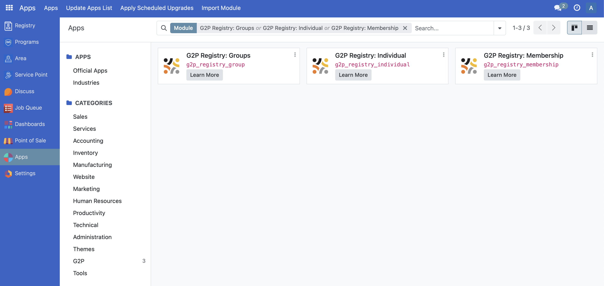
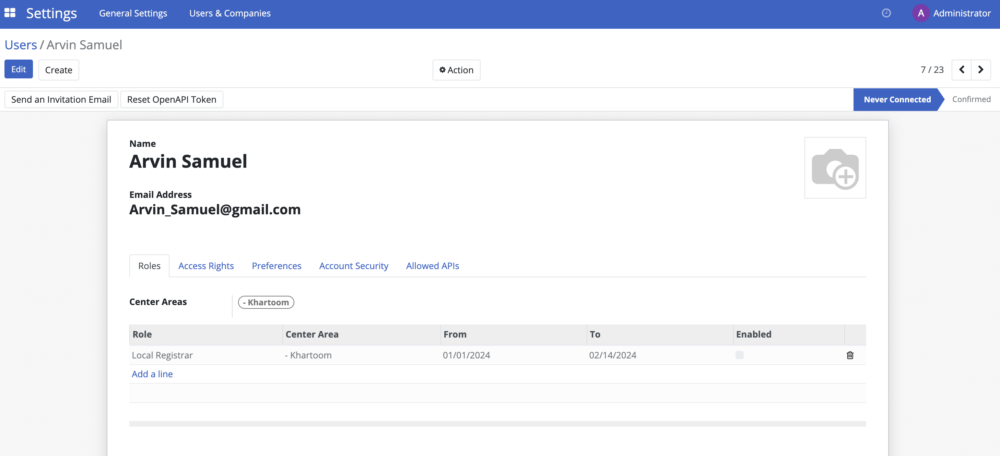
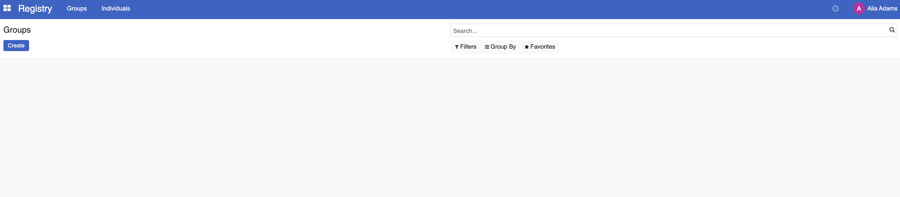

Configure ID and generate QR code
Contents
Configure ID and generate QR code#
This guide offers a comprehensive, step-by-step overview for Operations Admins and Administrators on the process of configuring identification ID credentials and generating corresponding QR codes within OpenSPP. It details the procedures for creating and managing ID types, assigning unique IDs to individuals or groups, and generating printable documents embedded with scannable QR codes.
Prerequisites#
To configure ID and generate QR code, you need to:
Have existing individual records in your registry, either by creating records manually register_individual or importing records into OpenSPP import_export_registrant_data.
Ensure your user account has the System Admin role. Learn more in this guide: ../administration/user_access documentation.
Make sure that the spp_pos module (OpenSPP POS: ID Redemption) is installed and activated. Learn more in the Installing Additional Modules section of this guide: Module installation.
Objective#
By the end of this tutorial, you will understand how to configure ID types, assign and manage IDs for individuals and groups, generate QR codes for these IDs, and print the corresponding identification documents.
Process#
Begin by configuring ID types to define all identification categories available for registrants. Next, assign the appropriate IDs and related information to individuals in the registry. Ensure that the spp_pos module (OpenSPP POS: ID Redemption) is installed to enable printing of registrant IDs with their associated QR codes.
Configure ID type#
To be able to create IDs, you must first configure the ID types. Login to OpenSPP as administrator, click on the menu icon beside Registry, then click on Registry from the menu.

Click the button Configuration in the top menu bar and select ID Type.
This will display the table view of all existing IDs where you can either View, Create, Edit or Delete IDs.
Create ID type#
To create a new ID type, click on New.

Name - (Required) The name of the ID type
Target Type - (Required) Define whether this ID is used for individuals or groups only, or both.
ID Type Validation - (Optional) Define a required prefix for the ID.
For example, if inputting '022' , then all IDs must start with 022, otherwise an error message will appear.

Edit ID type#
To Edit an existing ID Type, redirect back to ID type table view by clicking Configuration and selecting ID types. Click on the field you wish to modify and click Save to apply the changes.

Delete ID type#
To delete an ID type, select the ID type by clicking the checkbox and click on the Actions button. Click on Delete. Note that an ID type can only be removed if it is not in use.

Manage ID of a Group or Individual#
Once the ID types are successfully configured you can add it to an Individual or Group by going to the Registry. Navigate to the desired Individual/Group and click on the ID tab.

ID type - Displays the type of ID.
ID Number - Displays the value of the ID
Expiry Date - Indicates when the ID will expire
Status - Indicates if the ID is valid or invalid
Description - Description of the ID.
Add ID#
To add an ID, click on Add a line under the ID tab and select the type of ID you desire to add.

Alternatively, you can also add an ID by import to update an already existing individual or group along with its new ID details. Read import_export_registrant_data to learn more. You would need the following column headers for the ID data.
reg_ids/id_type - ID pass, UMID etc.. Make sure that the id type you will import is already defined in OpenSPP.
reg_ids/status - Valid or Invalid.
reg_ids/value - 11223412394, etc..
Edit ID#
To edit an ID, click on the field to edit it. Once done click the Save icon beside the Gear icon. You may also click on the Counterclockwise arrow icon to undo any changes.

Delete ID#
To delete an ID, click on the trashbin icon that corresponds to the ID you wish to delete.

Generate QR code#
To generate QR code, make sure the spp_pos module (OpenSPP POS: ID Redemption) is installed and activated on your OpenSPP instance. When installed, you should be able to see a green printer button beside the ID values from the ID tab of a Group or Individual.

Once you click the green printer button, a download of a pdf will automatically start which contains the ID information and QR code.